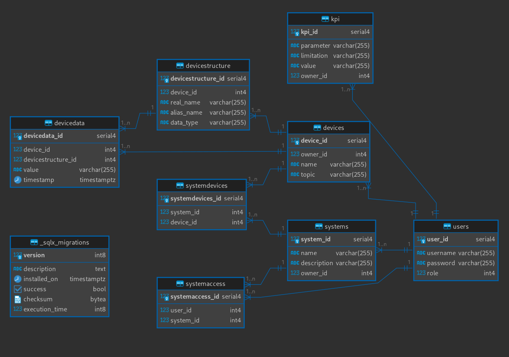

IoT: správa zaøízení
- Autoøi
- Matyá¹ Burnek
xburne00@stud.fit.vutbr.cz -
Backend, DB, Deployment
- Matsvei Hauryliuk
xhaury00@stud.fit.vutbr.cz -
Frontend, Deployment, Mockup
- Jindøich Vodák
xvodak06@stud.fit.vutbr.cz -
Frontend, Mockup, Návrh komponent
- URL aplikace
- http://tates.eu
U¾ivatelé systému pro testování
Uveïte prosím existující zástupce v¹ech rolí u¾ivatelù.
| Login | Heslo | Role |
|---|
| walter | walter | U¾ivatel |
| gustavo | gustavo | U¾ivatel |
| jesse | jesse | U¾ivatel |
Video
https://drive.google.com/drive/u/2/folders/1h1IRgFLL0wVLVLXdIOEIv2DDHP5e5rkb
Implementace
Bylo pøidáno roz¹íøení, ktere propojuje systém s realným MQTT brokerem.
Systém se skládá ze tøí hlavních komponent
- Backend (dashboard_server)
- Frontend (dashboard-app)
- MQTT service (services/mqtt_service)
Backend
Backend na zaèátku naèítá nastavení ze souboru .env, díky kterému se inicializuje. Poté se pokou¹í pøipojit do databáze. Jestli¾e spojení s databází je úspì¹né, spustí se Actix server.
Server se skládá z nìkolika hlavních èástí:
- handler - Stará se o v¹echny pøíchozí requesty
- model - Reprezentace dat ve formì objektù, pozdìji pøevádìných do JSON formátu
- schema - Objekty pøevádìny z JSON formátu. Pou¾ívány pøi vytváøení èi upravování dat
Frontend
Frontend vyu¾ívá JS frameworku Svelte, UI komponent flowbite a fontu ikon FontAwesome.
Pro komunikaci s backendem se vyu¾ívá tzv. "hooks", které usnadòují práci pøi vytváøení po¾adavkù na server, starají se o toast notifikace a primárnì o autentizaci.
Autentizace se nachází v souboru auth.js, který obsahuje funkce pro pøihlá¹ení, odhlá¹ení, registrování a ovìøení, zda je u¾ivatel pøihlá¹en.
Správnost relace je ovìøována pomocí cookies, které server po úspì¹ném pøihlá¹ení dodá.
Základní layout pro celý systém se nachází ve slo¾ce layouts a obsahuje navigaèní bar a komponentu, kde se zobrazují toast notifikace.
Jednotlivé komponenty, které jsou pou¾ívány napøíè systémem jsou ulo¾eny ve slo¾ce components.
MQTT service
Stará se o naslouchání na MQTT brokeru, kde jsou posílána data o IoT zaøízeních. Poté tato data zparsuje a pøiøadí do databáze k pøíslu¹nému zaøízení, které obsahuje dané polo¾ky. Pokud nìjakou z polo¾ek neobsahuje, tak je polo¾ka ignorována.
Databáze

Instalace
Struènì popi¹te:
- Pro spu¹tìní systému pøes docker je potøeba mít nainstalovaný docker compose. Poté staèí jen spustit
docker-compose up a v¹e ostatní se nastaví automaticky.
- Pro manuální spu¹tìní je tøeba mít nainstalované rust cargo, docker, npm a postupovat v následujících slo¾kách.
dashboard_server
- Napøed je nutné spustit databázi pøíkazem
docker-compose up
- Dále je tøeba nainstalovat
cargo install sqlx-cli a se spu¹tìnou databází migrovat pomocí sqlx migrate run
cargo run poté spou¹tí samotný server
dashboard-app
- Pro spu¹tìní webové aplikace je nutné nainstalovat v¹echny npm balíèky
npm install
- Spou¹tìní probíhá pøíkazem
npm run dev
Známé problémy
Z èasových dùvodù bohu¾el nebylo implementováno zobrazování dat, pøidávání ostatních u¾ivatelù do systémù, funkèní KPI systém, ale struktura byla implementována.